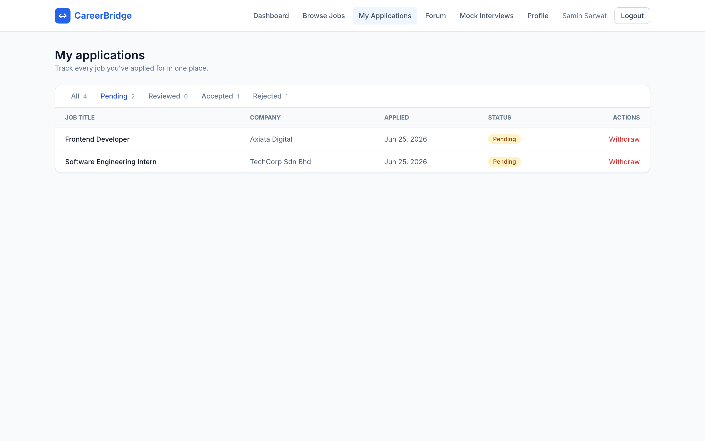

CareerBridge
Student Internship & Job Application Management System
Full System Overview — All 8 Modules
Team CHAMPION
SECJ3483 Web Technology — Group Project
Welcome to our presentation of CareerBridge, a full-stack web application for managing student internship and job applications. This system was built by Team CHAMPION using Vue 3 for the frontend and PHP Slim 4 for the backend. I'll walk you through the entire system — all 8 modules, the architecture, the database, and live screenshots of every feature.
What We'll Cover
System Architecture & Tech Stack
M1 Authentication & User ManagementM2 Job Management — Full CRUDM3 Application TrackingM4 Company ManagementM5 Reporting & AnalyticsM6 Student ProfileM7 Forum / CommunityM8 Mock InterviewsDatabase Design & Security
Here's the agenda. We'll start with the system architecture and tech stack, then go through each of the 8 modules with screenshots. We'll cover authentication, job management, application tracking, company management, analytics, student profiles, the forum, and mock interviews. Finally, we'll talk about the database design and security features.
Tech Stack
Frontend
Vue 3 — Composition API with <script setup>Vite — dev server + build toolVue Router — SPA navigation with role guardsAxios — HTTP client with JWT interceptorTailwind CSS — utility-first stylingChart.js — analytics dashboard charts
Backend
PHP 8.5 — server-side languageSlim 4 — micro-framework for REST APIPDO — prepared statements (SQL injection safe)JWT — Firebase JWT library for auth tokensMySQL — relational database (InnoDB)Composer — PHP dependency manager
Our tech stack: On the frontend, we use Vue 3 with the Composition API, Vite as the build tool, Vue Router for navigation with role-based guards, Axios for API calls with automatic JWT attachment, Tailwind CSS for styling, and Chart.js for the analytics dashboard. On the backend, we use PHP 8.5 with the Slim 4 micro-framework, PDO for all database queries with prepared statements to prevent SQL injection, Firebase JWT for authentication tokens, and MySQL as our database with InnoDB for foreign key support.
System Architecture
BrowserUser
→
Vue.js Frontendlocalhost:5173
→
Vite Proxy/api → :8000
→
PHP Slim 4 Backendlocalhost:8000
→
MySQL Databasecareerbridge
Request flow: User clicks → Vue sends HTTP request → Vite proxy forwards to PHP → Slim routes to Controller → PDO queries MySQL → JSON response → Vue updates UI reactively.
The architecture is a standard client-server model. The user's browser loads the Vue.js frontend. When the user interacts with the app, Vue sends HTTP requests through the Vite dev proxy, which forwards them to the PHP Slim 4 backend. The backend routes each request to the appropriate controller, which uses PDO to query the MySQL database. The response comes back as JSON, and Vue updates the UI reactively without a page reload. This is a Single Page Application architecture.
8 Modules — Who Built What
M1 Auth & UsersJWT login, register, role management, user directory. Shared infrastructure: Database, Json, Axios, JWT middleware.
M2 Job ManagementFull CRUD for job listings. Admins create/edit/deactivate. Students browse, search, filter. Soft delete.
M3 ApplicationsStudents apply, track status, withdraw. Admins review and change status. Duplicate prevention.
M4 CompaniesAdmin CRUD for company profiles. Linked to jobs via foreign key. Referential integrity checks.
M5 AnalyticsAdmin dashboard with stat cards and Chart.js bar chart. Aggregates data from jobs + applications.
M6 Student ProfileMatric number, programme, CGPA, skills, resume. Upsert pattern (insert or update).
M7 Forum / CommunityPosts with tags, comments, like toggle. Search and filter by tag.
M8 Mock InterviewsAdmins create interview slots. Students book them. Admins evaluate with scores and feedback.
Our system has 8 modules. M1 is authentication and user management — this is the shared foundation that all other modules depend on. M2 is job management with full CRUD. M3 is application tracking. M4 is company management. M5 is reporting and analytics with charts. M6 is student profiles. M7 is a forum for community discussion. M8 is mock interviews for practice. Each module was built by a different team member, but they all connect through the database and shared infrastructure.
Database — 10 Tables
Core Tables
users — id, name, email, password_hash, rolecompanies — id, name, industry, location, descriptionjobs — id, company_id (FK), posted_by (FK), title, type, deadline, is_activeapplications — id, job_id (FK), user_id (FK), cover_letter, status, UNIQUE(job_id, user_id)student_profiles — user_id (FK), matric_no, programme, cgpa, skills
Community & Interviews
posts — id, user_id (FK), title, content, tagcomments — id, post_id (FK), user_id (FK), contentpost_likes — post_id + user_id (composite PK)interview_slots — id, interviewer_id (FK), scheduled_at, is_bookedmock_interviews — slot_id (FK), student_id (FK), status, feedback, score
All tables use InnoDB with foreign key constraints for referential integrity. Passwords stored as bcrypt hashes (cost 12).
The database has 10 tables. The core tables are users, companies, jobs, applications, and student_profiles. The community and interview tables are posts, comments, post_likes, interview_slots, and mock_interviews. All tables use InnoDB engine with foreign key constraints. The applications table has a unique constraint on job_id and user_id to prevent duplicate applications. All passwords are stored as bcrypt hashes with a cost factor of 12 — we never store plain text passwords.
Demo Credentials
Password for all accounts: Password123!
Role Email What to Show
Student samin@student.utm.my Browse jobs, apply, my applications, profile, forum, book interview Admin farizal@careerbridge.my Dashboard, manage jobs, manage applications, companies, interviews Super Admin superadmin@careerbridge.my Everything admin + users directory
These are the demo credentials. All accounts use the same password: Password123! We'll start as a student to show the student-facing features, then switch to admin to show the management side, and finally super admin for the user directory.
M1 Login — Entry PointFrontend validates email format + password length. Backend verifies bcrypt hash and returns JWT token stored in localStorage.
This is the login page — the entry point to the system. The frontend validates the email format and password length before sending the request. On the backend, the password is verified against the bcrypt hash using password_verify(). If correct, a JWT token is generated containing the user's ID, email, and role. This token is stored in localStorage and attached to every future request via an Axios interceptor.
M6 Student DashboardShows application stats (total, pending, accepted, rejected) and 5 most recent applications. Data from GET /api/applications (student-scoped).
After logging in as a student, this is the dashboard. It shows application statistics — total, pending, accepted, and rejected — and a table of the 5 most recent applications with their statuses. This data comes from the applications endpoint, which returns only the logged-in student's applications because the backend filters by user_id from the JWT token.
M2 Browse Jobs (Student)GET /api/jobs — loads all active jobs. Each card shows title, company, type badge, description, and deadline. Apply button disabled if already applied.
This is the Browse Jobs page. It calls GET /api/jobs to load all active job listings. Each job is rendered as a card showing the title, company name, a colored type badge, a short description, and the application deadline. The Apply button is automatically disabled if the student has already applied to that job — this is done by loading the student's applications in parallel and checking job IDs.
M2 Search & Type Filter
Search box with 400ms debounce — filters by title or company name.
Dropdown filters by type: internship, full-time, part-time. Updates grid reactively.
On the left, the search box has a 400ms debounce — it waits until the user stops typing before filtering, which prevents laggy UI. On the right, the dropdown filters by job type. Both update the grid reactively using Vue's computed properties — no page reload needed.
M2 Job Detail ViewGET /api/jobs/{id} — Shows full description, requirements, deadline, company info. Backend uses JOIN to get company + posted_by name in one query.
Clicking View on a job card opens the detail page. This calls GET /api/jobs/{id} which returns the full job info including description, requirements, deadline, and company details. The backend uses a 3-table JOIN query to get the company name, industry, and the name of the admin who posted the job — all in a single query.
M3 Apply for a Job
Click "Apply" opens a modal with optional cover letter.
Student writes a cover letter (max 5000 chars). Character counter shown.
When a student clicks Apply, a modal pops up with an optional cover letter field. The cover letter is limited to 5000 characters with a live character counter. On submit, the frontend sends POST /api/applications with the job_id and cover_letter.
M3 Application Submitted!POST /api/applications — Backend checks: job exists, job active, not already applied (409 if duplicate). Toast confirms success. Apply button now disabled.
After submitting, a green toast notification confirms success. On the backend, three checks happen before inserting: 1) Does the job exist? 2) Is the job still active? 3) Has this student already applied? If any check fails, the application is not created. The Apply button is now disabled on the frontend because the job ID was added to the applied set.
M3 My Applications (Student)GET /api/applications — Students see only their own. Tabs filter by status. Can withdraw pending applications only.
This is the My Applications page. The GET /api/applications endpoint is role-aware: students see only their own applications, admins see all. The tabs at the top filter by status — All, Pending, Reviewed, Accepted, Rejected. Students can withdraw an application, but only if its status is still 'pending'. Once an admin reviews it, the withdraw button disappears.
M3 My Applications — Pending Tab
Filtering by "Pending" tab shows only applications awaiting review. Withdraw button available for these.
Here we've clicked the Pending tab to show only applications that are still awaiting review. The withdraw button is available for these — the student can cancel their application before an admin reviews it. A confirm dialog appears before the withdrawal is finalized.
M6 Student ProfileMatric number, programme, CGPA (0.00–4.00), skills, resume text. Uses PUT /api/profile (upsert — INSERT ... ON DUPLICATE KEY UPDATE).
The student profile page lets students fill in their matric number, programme, CGPA, skills, and resume text. It uses an upsert pattern — INSERT ... ON DUPLICATE KEY UPDATE — so the same endpoint handles both creating and updating the profile. The CGPA field is validated to be between 0.00 and 4.00.
M5 Admin DashboardGET /api/admin/analytics — Stat cards + Chart.js bar chart showing application status breakdown. Aggregates data from jobs and applications tables.
Now switching to the admin side. The admin dashboard shows stat cards with total jobs, active jobs, total applications, and counts by status. Below that is a Chart.js bar chart showing the breakdown of application statuses — pending, reviewed, accepted, rejected. This data comes from the analytics endpoint which runs COUNT queries on the jobs and applications tables.
M2 Manage Jobs (Admin)Admin sees all jobs with Edit and Delete (deactivate) buttons. Full CRUD interface. Status badge shows Active/Inactive.
This is the Manage Jobs page for admins. It shows all jobs in a table with Edit and Delete buttons. Delete is actually a soft delete — it sets is_active to 0 instead of removing the record. The status badge shows whether each job is Active or Inactive. The Add Job button opens a modal form for creating new job listings.
M2 Create Job — Form with Validation
Empty form: title, company dropdown, type, deadline, description, requirements.
Frontend validates: required fields, future deadline. Backend validates again.
The create job form has fields for title, company dropdown — which is populated from the companies API — type, deadline with a date picker, description, and requirements. The frontend validates required fields and checks that the deadline is in the future. The backend validates everything again because frontend validation can be bypassed by sending requests directly to the API.
M3 Manage Applications (Admin)Admins see ALL applications. Dropdown changes status via PUT /api/applications/{id}/status. Uses optimistic update — UI updates instantly, rolls back on error.
On the admin side, this Manage Applications page shows ALL applications in the system. The admin can change the status using the dropdown — pending, reviewed, accepted, rejected. The frontend uses an optimistic update pattern: it updates the UI immediately, then sends the API request. If the request fails, the UI rolls back to the previous status and shows an error toast. This makes the app feel fast and responsive.
M4 Manage Companies (Admin)
Admin sees all companies with Edit and Delete buttons.
Create company form: name, industry, location, description.
Companies are linked to jobs via foreign key. Cannot delete a company that has jobs attached (returns 400 error).
This is the Manage Companies page. Admins can create, edit, and delete companies. The backend prevents deleting a company that still has jobs attached — it checks for linked jobs first and returns a 400 error if any exist. This is referential integrity — you can't have jobs pointing to a company that doesn't exist. The company dropdown in the Create Job form is populated from this module's API.
M8 Mock Interviews (Admin)Admins create interview slots with date/time. Students book available slots. Admins evaluate with scores and feedback text.
The Mock Interviews module lets admins create interview time slots. Students can book an available slot from their dashboard. After the interview, the admin can add a score and written feedback. The student can see their interview history and results on their sessions page.
M7 Forum / CommunityStudents post questions and discussions with tags. Other students can comment and like posts. Search and filter by tag.
The Forum module is a community discussion board. Students can create posts with a title, content, and a free-text tag. Other students can comment on posts and like them. The like toggle uses a composite primary key on post_likes (post_id, user_id) to prevent double-liking. The forum supports search and filtering by tag.
M1 Admin Users (Super Admin Only)GET /api/admin/users — Only superadmin role can access. Read-only directory of all accounts with role badges.
The Admin Users page is only accessible to super admins. It shows a read-only directory of all user accounts with their names, emails, and role badges. The JWT middleware enforces this — the route has JwtMiddleware('superadmin'), so even regular admins get a 403 Forbidden response if they try to access it.
Security Features
Backend Security
PDO Prepared Statements — all queries use :placeholder syntax, preventing SQL injectionJWT Role Gating — JwtMiddleware on protected routesBcrypt Passwords — password_hash() with cost 12Ownership checks — students can only access their own dataSoft delete — jobs deactivated, not erased (audit trail)Duplicate prevention — UNIQUE constraint on (job_id, user_id)Referential integrity — can't delete company with linked jobs
Frontend Security
Route guards — router checks role before showing pageAuto-logout on 401 — Axios interceptor clears tokenClient-side validation — all forms validated before API callConfirm dialogs — before destructive actions (delete, withdraw)JWT in localStorage — attached to every request via interceptorDisabled buttons — Apply disabled if already applied
Security is implemented on both sides. On the backend: PDO prepared statements prevent SQL injection, JWT middleware enforces role-based access control, passwords are hashed with bcrypt at cost 12, ownership checks prevent students from accessing other students' data, and referential integrity prevents deleting companies with linked jobs. On the frontend: route guards block unauthorized page access, the Axios interceptor auto-logs out on 401, confirm dialogs prevent accidental destructive actions, and buttons are disabled when actions aren't available.
HTTP Status Codes Used
200
OK — GET, PUT, DELETE success
201
Created — POST success
400
Bad Request — validation failed
401
Unauthorized — bad/missing JWT
403
Forbidden — wrong role or not owner
404
Not Found — resource missing
409
Conflict — already applied / duplicate
We use proper HTTP status codes throughout the entire API. 200 for successful reads, updates, and deletes. 201 for successful creation. 400 for validation errors. 401 for missing or invalid JWT tokens. 403 for wrong role or not-owner situations. 404 for resources that don't exist. And 409 for conflicts like duplicate applications. These standard codes tell the frontend exactly what happened so it can show the right error message.
Complete API — All Endpoints
M1 Auth & Users
POST /api/auth/login — Login
POST /api/auth/register — Register
GET /api/admin/users — Super admin only
M2 Jobs
GET /api/jobs — List (public)
GET /api/jobs/{id} — Detail (public)
POST /api/jobs — Create (admin)
PUT /api/jobs/{id} — Update (admin)
DELETE /api/jobs/{id} — Soft delete (admin)
M3 Applications
GET /api/applications — Role-aware list
POST /api/applications — Apply (student)
PUT /api/applications/{id}/status — Update (admin)
DELETE /api/applications/{id} — Withdraw (student)
M4 Companies
GET /api/companies — List (public)
POST /api/companies — Create (admin)
PUT /api/companies/{id} — Update (admin)
DELETE /api/companies/{id} — Delete (admin)
M5 Analytics
GET /api/admin/analytics — Dashboard stats (admin)
M6 Profile
GET /api/profile — View own profile
PUT /api/profile — Upsert profile
M7 Forum
GET /api/posts — List posts
POST /api/posts — Create post
POST /api/comments — Add comment
POST /api/posts/{id}/like — Toggle like
M8 Interviews
GET /api/interview-slots — List slots
POST /api/interview-slots — Create (admin)
POST /api/mock-interviews/book — Book (student)
PUT /api/mock-interviews/{id} — Evaluate (admin)
This is the complete API — all endpoints across all 8 modules. M1 has login, register, and user directory. M2 has 5 endpoints for job CRUD. M3 has 4 endpoints for applications. M4 has 4 endpoints for companies. M5 has 1 analytics endpoint. M6 has 2 profile endpoints. M7 has 4 forum endpoints. M8 has 4 interview endpoints. That's over 25 API endpoints total, all secured with JWT authentication and role-based middleware.
Team CHAMPION — Module Ownership
Module Name Owner Key Feature
M1 Auth & Users Areeb JWT login, role middleware, shared infrastructure M2 Job Management Samin Full CRUD, soft delete, search + filter M3 Application Tracking Samin Apply, withdraw, role-aware listing, status flow M4 Company Management Mariam CRUD, referential integrity with jobs M5 Reporting & Analytics Mariam Dashboard stats, Chart.js visualization M6 Student Profile Areeb Upsert pattern, CGPA validation M7 Forum / Community Monika Posts, comments, likes, tag filtering M8 Mock Interviews Monika Slot booking, evaluation, scores
Here's the team breakdown. Areeb built M1 (authentication and shared infrastructure) and M6 (student profiles). Samin built M2 (job management) and M3 (application tracking). Mariam built M4 (company management) and M5 (analytics). Monika built M7 (forum) and M8 (mock interviews). Together, these 8 modules form a complete career bridge platform for students.
System at a Glance
Built with: Vue 3 + Vite + Tailwind CSS + PHP Slim 4 + MySQL + JWT + PDO + Chart.js
To summarize the system: 8 modules, over 25 API endpoints, 10 database tables, 3 user roles (student, admin, super admin), more than 15 Vue views, and 8 backend controllers. The entire system is built with Vue 3, Vite, Tailwind CSS on the frontend, and PHP Slim 4, MySQL, JWT, and PDO on the backend.
Thank You
CareerBridge — Student Internship & Job Application Management System
Team CHAMPION
Vue 3 · PHP Slim 4 · MySQL · JWT Authentication · PDO Prepared Statements · Chart.js
Any questions?
That covers the entire CareerBridge system. We've walked through all 8 modules — from authentication to job management, application tracking, companies, analytics, student profiles, the forum, and mock interviews. The system is secured with JWT authentication and role-based access control, uses PDO prepared statements throughout to prevent SQL injection, and provides a responsive, modern user interface built with Vue 3 and Tailwind CSS. Any questions?